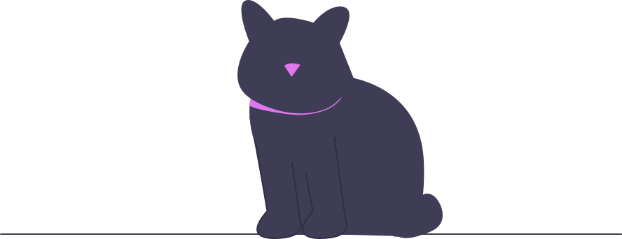

Equipo de Profesionales
Clínica Veterinaria es la clínica veterinaria que estabas buscando para el cuidado de tu mascota. Nuestro objetivo es dar solución a los posibles problemas médicos sanitarios de tu animal de compañía, colaborando en la mejora y el mantenimiento del estado de salud de nuestros pequeños amigos.
